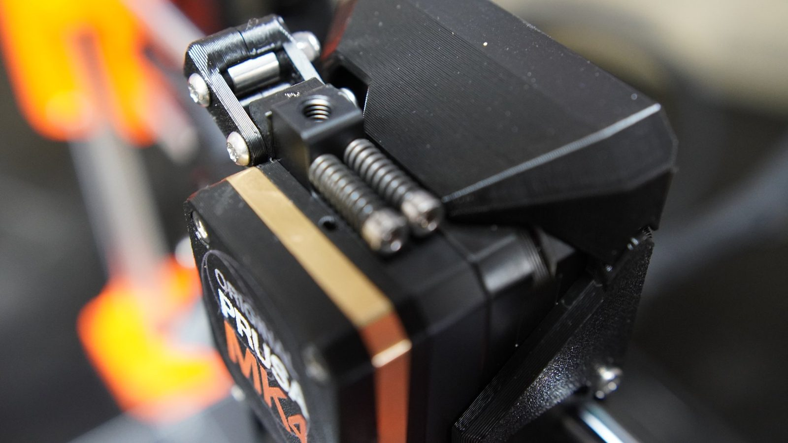

Christmas kit archaeology
Opening the boxes and finding the comforting promise of individually bagged parts.
Machines that make machines / Prusa MK4
A Christmas build of an Original Prusa MK4 kit: rods, printed brackets, bearings, wiring, screen and calibration, assembled one subassembly at a time over about two days.
3D printers sit between software, mechanics and electronics, with immediate consequences. You can think in CAD in the morning and hold a useful bracket by the evening. Dangerous, frankly.

To be written up.
To be written up.
Build arc
Five short clips: unboxing, rods and rails, frame assembly, wiring, and the finished machine. The full build is several hours of sorting screws into piles.
Opening the boxes and finding the comforting promise of individually bagged parts.
The stage where it stops looking like a flat-pack delivery and starts looking like a machine.
Cable routing, controller wiring and the quiet hope that every connector is exactly where it should be.
The finished MK4 on the bench, ready to become part of the rest of the workshop ecosystem.
Mechanics
A printer is a lovely little reminder that software cannot rescue bad geometry forever. Rods, bearings, belts and leadscrews all have to move cleanly before the clever bits get their turn.
Electronics
The wiring took longer than the rest of the assembly. Route it, strain-relieve it, check it, and then be nervous about the first power-on anyway.
Calibration
Bed, nozzle, belts and axes are all part of one feedback loop. Assembling it is the easy half; the useful half is learning how the machine reports its own state, and which of those reports to believe.
Why useful
For robot parts, brackets, fixtures, jigs and weird one-off workshop needs, a reliable printer changes the rhythm of a project. The idea gets physical faster.

